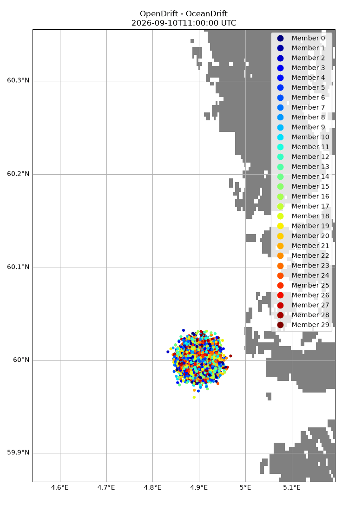
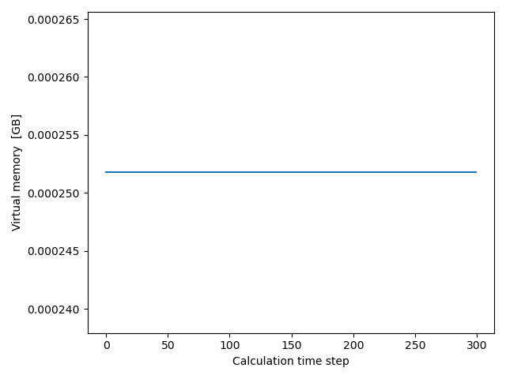

Note
Go to the end to download the full example code.
Ensemble
from datetime import timedelta
import numpy as np
from opendrift.models.oceandrift import OceanDrift
from opendrift.readers import reader_netCDF_CF_generic
Drift simulation using 30 member ensemble wind data from MEPS model of MET Norway
o = OceanDrift(loglevel=20)
o.set_config('drift:vertical_mixing', False)
r = reader_netCDF_CF_generic.Reader('https://thredds.met.no/thredds/dodsC/mepslatest/meps_lagged_6_h_latest_2_5km_latest.nc')
o.add_reader(r)
o.seed_elements(lat=60, lon=4.9, time=r.start_time,
radius=1000, number=10000)
o.run(duration=timedelta(hours=50), time_step=600, time_step_output=3600)
16:03:31 INFO opendrift:576: OpenDriftSimulation initialised (version 1.14.6 / v1.14.6-20-gd60eace)
16:03:31 INFO opendrift.readers:63: Opening file with xr.open_dataset
16:03:32 INFO opendrift.readers.reader_netCDF_CF_generic:332: Detected dimensions: {'time': 'time', 'x': 'x', 'y': 'y'}
16:03:32 INFO opendrift.models.basemodel.environment:203: Adding a global landmask from GSHHG
16:03:36 INFO opendrift.models.basemodel.environment:227: Fallback values will be used for the following variables which have no readers:
16:03:36 INFO opendrift.models.basemodel.environment:230: x_sea_water_velocity: 0.000000
16:03:36 INFO opendrift.models.basemodel.environment:230: y_sea_water_velocity: 0.000000
16:03:36 INFO opendrift.models.basemodel.environment:230: sea_surface_height: 0.000000
16:03:36 INFO opendrift.models.basemodel.environment:230: upward_sea_water_velocity: 0.000000
16:03:36 INFO opendrift.models.basemodel.environment:230: ocean_vertical_diffusivity: 0.000000
16:03:36 INFO opendrift.models.basemodel.environment:230: sea_surface_wave_significant_height: 0.000000
16:03:36 INFO opendrift.models.basemodel.environment:230: sea_surface_wave_stokes_drift_x_velocity: 0.000000
16:03:36 INFO opendrift.models.basemodel.environment:230: sea_surface_wave_stokes_drift_y_velocity: 0.000000
16:03:36 INFO opendrift.models.basemodel.environment:230: ocean_mixed_layer_thickness: 50.000000
16:03:36 INFO opendrift.models.basemodel.environment:230: sea_floor_depth_below_sea_level: 10000.000000
16:03:36 INFO opendrift:1803: Skipping environment variable ocean_vertical_diffusivity because of condition ['drift:vertical_mixing', 'is', False]
16:03:36 INFO opendrift:1803: Skipping environment variable ocean_mixed_layer_thickness because of condition ['drift:vertical_mixing', 'is', False]
16:03:36 INFO opendrift:1814: Storing previous values of element property lon because of condition (('general:coastline_action', 'in', ['stranding', 'previous']), 'or', ('general:seafloor_action', 'in', ['previous']))
16:03:36 INFO opendrift:1814: Storing previous values of element property lat because of condition (('general:coastline_action', 'in', ['stranding', 'previous']), 'or', ('general:seafloor_action', 'in', ['previous']))
16:03:36 INFO opendrift:1822: Storing previous values of environment variable sea_surface_height because of condition ['drift:vertical_advection', 'is', True]
16:03:36 INFO opendrift:952: Using existing reader for land_binary_mask to move elements to ocean
16:03:36 INFO opendrift:982: All points are in ocean
16:03:36 INFO opendrift:2111: 2025-11-25 14:00:00 - step 1 of 300 - 10000 active elements (0 deactivated)
16:03:36 WARNING opendrift.readers.interpolation.structured:63: Ensemble data currently not extrapolated towards seafloor
16:03:36 WARNING opendrift.readers.interpolation.structured:63: Ensemble data currently not extrapolated towards seafloor
16:03:36 INFO opendrift:2111: 2025-11-25 14:10:00 - step 2 of 300 - 10000 active elements (0 deactivated)
16:03:36 WARNING opendrift.readers.interpolation.structured:63: Ensemble data currently not extrapolated towards seafloor
16:03:36 WARNING opendrift.readers.interpolation.structured:63: Ensemble data currently not extrapolated towards seafloor
16:03:37 INFO opendrift:2111: 2025-11-25 14:20:00 - step 3 of 300 - 10000 active elements (0 deactivated)
16:03:37 INFO opendrift:2111: 2025-11-25 14:30:00 - step 4 of 300 - 10000 active elements (0 deactivated)
16:03:37 INFO opendrift:2111: 2025-11-25 14:40:00 - step 5 of 300 - 10000 active elements (0 deactivated)
16:03:37 INFO opendrift:2111: 2025-11-25 14:50:00 - step 6 of 300 - 10000 active elements (0 deactivated)
16:03:37 INFO opendrift:2111: 2025-11-25 15:00:00 - step 7 of 300 - 10000 active elements (0 deactivated)
16:03:37 INFO opendrift:2111: 2025-11-25 15:10:00 - step 8 of 300 - 10000 active elements (0 deactivated)
16:03:38 WARNING opendrift.readers.interpolation.structured:63: Ensemble data currently not extrapolated towards seafloor
16:03:38 WARNING opendrift.readers.interpolation.structured:63: Ensemble data currently not extrapolated towards seafloor
16:03:38 INFO opendrift:2111: 2025-11-25 15:20:00 - step 9 of 300 - 10000 active elements (0 deactivated)
16:03:38 INFO opendrift:2111: 2025-11-25 15:30:00 - step 10 of 300 - 10000 active elements (0 deactivated)
16:03:38 INFO opendrift:2111: 2025-11-25 15:40:00 - step 11 of 300 - 10000 active elements (0 deactivated)
16:03:38 INFO opendrift:2111: 2025-11-25 15:50:00 - step 12 of 300 - 10000 active elements (0 deactivated)
16:03:39 INFO opendrift:2111: 2025-11-25 16:00:00 - step 13 of 300 - 10000 active elements (0 deactivated)
16:03:39 INFO opendrift:2111: 2025-11-25 16:10:00 - step 14 of 300 - 10000 active elements (0 deactivated)
16:03:39 WARNING opendrift.readers.interpolation.structured:63: Ensemble data currently not extrapolated towards seafloor
16:03:39 WARNING opendrift.readers.interpolation.structured:63: Ensemble data currently not extrapolated towards seafloor
16:03:39 INFO opendrift:2111: 2025-11-25 16:20:00 - step 15 of 300 - 10000 active elements (0 deactivated)
16:03:39 INFO opendrift:2111: 2025-11-25 16:30:00 - step 16 of 300 - 10000 active elements (0 deactivated)
16:03:40 INFO opendrift:2111: 2025-11-25 16:40:00 - step 17 of 300 - 10000 active elements (0 deactivated)
16:03:40 INFO opendrift:2111: 2025-11-25 16:50:00 - step 18 of 300 - 10000 active elements (0 deactivated)
16:03:40 INFO opendrift:2111: 2025-11-25 17:00:00 - step 19 of 300 - 10000 active elements (0 deactivated)
16:03:40 INFO opendrift:2111: 2025-11-25 17:10:00 - step 20 of 300 - 10000 active elements (0 deactivated)
16:03:41 WARNING opendrift.readers.interpolation.structured:63: Ensemble data currently not extrapolated towards seafloor
16:03:41 WARNING opendrift.readers.interpolation.structured:63: Ensemble data currently not extrapolated towards seafloor
16:03:41 INFO opendrift:2111: 2025-11-25 17:20:00 - step 21 of 300 - 10000 active elements (0 deactivated)
16:03:41 INFO opendrift:2111: 2025-11-25 17:30:00 - step 22 of 300 - 10000 active elements (0 deactivated)
16:03:41 INFO opendrift:2111: 2025-11-25 17:40:00 - step 23 of 300 - 10000 active elements (0 deactivated)
16:03:41 INFO opendrift:2111: 2025-11-25 17:50:00 - step 24 of 300 - 10000 active elements (0 deactivated)
16:03:41 INFO opendrift:2111: 2025-11-25 18:00:00 - step 25 of 300 - 10000 active elements (0 deactivated)
16:03:41 INFO opendrift:2111: 2025-11-25 18:10:00 - step 26 of 300 - 10000 active elements (0 deactivated)
16:03:42 WARNING opendrift.readers.interpolation.structured:63: Ensemble data currently not extrapolated towards seafloor
16:03:42 WARNING opendrift.readers.interpolation.structured:63: Ensemble data currently not extrapolated towards seafloor
16:03:42 INFO opendrift:2111: 2025-11-25 18:20:00 - step 27 of 300 - 10000 active elements (0 deactivated)
16:03:42 INFO opendrift:2111: 2025-11-25 18:30:00 - step 28 of 300 - 10000 active elements (0 deactivated)
16:03:42 INFO opendrift:2111: 2025-11-25 18:40:00 - step 29 of 300 - 10000 active elements (0 deactivated)
16:03:42 INFO opendrift:2111: 2025-11-25 18:50:00 - step 30 of 300 - 10000 active elements (0 deactivated)
16:03:42 INFO opendrift:2111: 2025-11-25 19:00:00 - step 31 of 300 - 10000 active elements (0 deactivated)
16:03:42 INFO opendrift:2111: 2025-11-25 19:10:00 - step 32 of 300 - 10000 active elements (0 deactivated)
16:03:43 WARNING opendrift.readers.interpolation.structured:63: Ensemble data currently not extrapolated towards seafloor
16:03:43 WARNING opendrift.readers.interpolation.structured:63: Ensemble data currently not extrapolated towards seafloor
16:03:43 INFO opendrift:2111: 2025-11-25 19:20:00 - step 33 of 300 - 10000 active elements (0 deactivated)
16:03:43 INFO opendrift:2111: 2025-11-25 19:30:00 - step 34 of 300 - 10000 active elements (0 deactivated)
16:03:43 INFO opendrift:2111: 2025-11-25 19:40:00 - step 35 of 300 - 10000 active elements (0 deactivated)
16:03:43 INFO opendrift:2111: 2025-11-25 19:50:00 - step 36 of 300 - 10000 active elements (0 deactivated)
16:03:43 INFO opendrift:2111: 2025-11-25 20:00:00 - step 37 of 300 - 10000 active elements (0 deactivated)
16:03:43 INFO opendrift:2111: 2025-11-25 20:10:00 - step 38 of 300 - 10000 active elements (0 deactivated)
16:03:44 WARNING opendrift.readers.interpolation.structured:63: Ensemble data currently not extrapolated towards seafloor
16:03:44 WARNING opendrift.readers.interpolation.structured:63: Ensemble data currently not extrapolated towards seafloor
16:03:44 INFO opendrift:2111: 2025-11-25 20:20:00 - step 39 of 300 - 10000 active elements (0 deactivated)
16:03:44 INFO opendrift:2111: 2025-11-25 20:30:00 - step 40 of 300 - 10000 active elements (0 deactivated)
16:03:44 INFO opendrift:2111: 2025-11-25 20:40:00 - step 41 of 300 - 10000 active elements (0 deactivated)
16:03:44 INFO opendrift:2111: 2025-11-25 20:50:00 - step 42 of 300 - 10000 active elements (0 deactivated)
16:03:44 INFO opendrift:2111: 2025-11-25 21:00:00 - step 43 of 300 - 10000 active elements (0 deactivated)
16:03:45 INFO opendrift:2111: 2025-11-25 21:10:00 - step 44 of 300 - 10000 active elements (0 deactivated)
16:03:45 WARNING opendrift.readers.interpolation.structured:63: Ensemble data currently not extrapolated towards seafloor
16:03:45 WARNING opendrift.readers.interpolation.structured:63: Ensemble data currently not extrapolated towards seafloor
16:03:45 INFO opendrift:2111: 2025-11-25 21:20:00 - step 45 of 300 - 10000 active elements (0 deactivated)
16:03:45 INFO opendrift:2111: 2025-11-25 21:30:00 - step 46 of 300 - 10000 active elements (0 deactivated)
16:03:45 INFO opendrift:2111: 2025-11-25 21:40:00 - step 47 of 300 - 10000 active elements (0 deactivated)
16:03:46 INFO opendrift:2111: 2025-11-25 21:50:00 - step 48 of 300 - 10000 active elements (0 deactivated)
16:03:46 INFO opendrift:2111: 2025-11-25 22:00:00 - step 49 of 300 - 10000 active elements (0 deactivated)
16:03:46 INFO opendrift:2111: 2025-11-25 22:10:00 - step 50 of 300 - 10000 active elements (0 deactivated)
16:03:46 WARNING opendrift.readers.interpolation.structured:63: Ensemble data currently not extrapolated towards seafloor
16:03:46 WARNING opendrift.readers.interpolation.structured:63: Ensemble data currently not extrapolated towards seafloor
16:03:46 INFO opendrift:2111: 2025-11-25 22:20:00 - step 51 of 300 - 10000 active elements (0 deactivated)
16:03:46 INFO opendrift:2111: 2025-11-25 22:30:00 - step 52 of 300 - 10000 active elements (0 deactivated)
16:03:47 INFO opendrift:2111: 2025-11-25 22:40:00 - step 53 of 300 - 10000 active elements (0 deactivated)
16:03:47 INFO opendrift:2111: 2025-11-25 22:50:00 - step 54 of 300 - 10000 active elements (0 deactivated)
16:03:47 INFO opendrift:2111: 2025-11-25 23:00:00 - step 55 of 300 - 10000 active elements (0 deactivated)
16:03:47 INFO opendrift:2111: 2025-11-25 23:10:00 - step 56 of 300 - 10000 active elements (0 deactivated)
16:03:47 WARNING opendrift.readers.interpolation.structured:63: Ensemble data currently not extrapolated towards seafloor
16:03:47 WARNING opendrift.readers.interpolation.structured:63: Ensemble data currently not extrapolated towards seafloor
16:03:47 INFO opendrift:2111: 2025-11-25 23:20:00 - step 57 of 300 - 10000 active elements (0 deactivated)
16:03:48 INFO opendrift:2111: 2025-11-25 23:30:00 - step 58 of 300 - 10000 active elements (0 deactivated)
16:03:48 INFO opendrift:2111: 2025-11-25 23:40:00 - step 59 of 300 - 10000 active elements (0 deactivated)
16:03:48 INFO opendrift:2111: 2025-11-25 23:50:00 - step 60 of 300 - 10000 active elements (0 deactivated)
16:03:48 INFO opendrift:2111: 2025-11-26 00:00:00 - step 61 of 300 - 10000 active elements (0 deactivated)
16:03:48 INFO opendrift:2111: 2025-11-26 00:10:00 - step 62 of 300 - 10000 active elements (0 deactivated)
16:03:49 WARNING opendrift.readers.interpolation.structured:63: Ensemble data currently not extrapolated towards seafloor
16:03:49 WARNING opendrift.readers.interpolation.structured:63: Ensemble data currently not extrapolated towards seafloor
16:03:49 INFO opendrift:2111: 2025-11-26 00:20:00 - step 63 of 300 - 10000 active elements (0 deactivated)
16:03:49 INFO opendrift:2111: 2025-11-26 00:30:00 - step 64 of 300 - 10000 active elements (0 deactivated)
16:03:49 INFO opendrift:2111: 2025-11-26 00:40:00 - step 65 of 300 - 10000 active elements (0 deactivated)
16:03:49 INFO opendrift:2111: 2025-11-26 00:50:00 - step 66 of 300 - 10000 active elements (0 deactivated)
16:03:49 INFO opendrift:2111: 2025-11-26 01:00:00 - step 67 of 300 - 10000 active elements (0 deactivated)
16:03:49 INFO opendrift:2111: 2025-11-26 01:10:00 - step 68 of 300 - 10000 active elements (0 deactivated)
16:03:50 WARNING opendrift.readers.interpolation.structured:63: Ensemble data currently not extrapolated towards seafloor
16:03:50 WARNING opendrift.readers.interpolation.structured:63: Ensemble data currently not extrapolated towards seafloor
16:03:50 INFO opendrift:2111: 2025-11-26 01:20:00 - step 69 of 300 - 10000 active elements (0 deactivated)
16:03:50 INFO opendrift:2111: 2025-11-26 01:30:00 - step 70 of 300 - 10000 active elements (0 deactivated)
16:03:50 INFO opendrift:2111: 2025-11-26 01:40:00 - step 71 of 300 - 10000 active elements (0 deactivated)
16:03:50 INFO opendrift:2111: 2025-11-26 01:50:00 - step 72 of 300 - 10000 active elements (0 deactivated)
16:03:50 INFO opendrift:2111: 2025-11-26 02:00:00 - step 73 of 300 - 10000 active elements (0 deactivated)
16:03:50 INFO opendrift:2111: 2025-11-26 02:10:00 - step 74 of 300 - 10000 active elements (0 deactivated)
16:03:51 WARNING opendrift.readers.interpolation.structured:63: Ensemble data currently not extrapolated towards seafloor
16:03:51 WARNING opendrift.readers.interpolation.structured:63: Ensemble data currently not extrapolated towards seafloor
16:03:51 INFO opendrift:2111: 2025-11-26 02:20:00 - step 75 of 300 - 10000 active elements (0 deactivated)
16:03:51 INFO opendrift:2111: 2025-11-26 02:30:00 - step 76 of 300 - 10000 active elements (0 deactivated)
16:03:51 INFO opendrift:2111: 2025-11-26 02:40:00 - step 77 of 300 - 10000 active elements (0 deactivated)
16:03:51 INFO opendrift:2111: 2025-11-26 02:50:00 - step 78 of 300 - 10000 active elements (0 deactivated)
16:03:51 INFO opendrift:2111: 2025-11-26 03:00:00 - step 79 of 300 - 10000 active elements (0 deactivated)
16:03:52 INFO opendrift:2111: 2025-11-26 03:10:00 - step 80 of 300 - 10000 active elements (0 deactivated)
16:03:52 WARNING opendrift.readers.interpolation.structured:63: Ensemble data currently not extrapolated towards seafloor
16:03:52 WARNING opendrift.readers.interpolation.structured:63: Ensemble data currently not extrapolated towards seafloor
16:03:52 INFO opendrift:2111: 2025-11-26 03:20:00 - step 81 of 300 - 10000 active elements (0 deactivated)
16:03:52 INFO opendrift:2111: 2025-11-26 03:30:00 - step 82 of 300 - 10000 active elements (0 deactivated)
16:03:52 INFO opendrift:2111: 2025-11-26 03:40:00 - step 83 of 300 - 10000 active elements (0 deactivated)
16:03:52 INFO opendrift:2111: 2025-11-26 03:50:00 - step 84 of 300 - 10000 active elements (0 deactivated)
16:03:53 INFO opendrift:2111: 2025-11-26 04:00:00 - step 85 of 300 - 10000 active elements (0 deactivated)
16:03:53 INFO opendrift:2111: 2025-11-26 04:10:00 - step 86 of 300 - 10000 active elements (0 deactivated)
16:03:53 WARNING opendrift.readers.interpolation.structured:63: Ensemble data currently not extrapolated towards seafloor
16:03:53 WARNING opendrift.readers.interpolation.structured:63: Ensemble data currently not extrapolated towards seafloor
16:03:53 INFO opendrift:2111: 2025-11-26 04:20:00 - step 87 of 300 - 10000 active elements (0 deactivated)
16:03:53 INFO opendrift:2111: 2025-11-26 04:30:00 - step 88 of 300 - 10000 active elements (0 deactivated)
16:03:53 INFO opendrift:2111: 2025-11-26 04:40:00 - step 89 of 300 - 10000 active elements (0 deactivated)
16:03:54 INFO opendrift:2111: 2025-11-26 04:50:00 - step 90 of 300 - 10000 active elements (0 deactivated)
16:03:54 INFO opendrift:2111: 2025-11-26 05:00:00 - step 91 of 300 - 10000 active elements (0 deactivated)
16:03:54 INFO opendrift:2111: 2025-11-26 05:10:00 - step 92 of 300 - 10000 active elements (0 deactivated)
16:03:54 WARNING opendrift.readers.interpolation.structured:63: Ensemble data currently not extrapolated towards seafloor
16:03:54 WARNING opendrift.readers.interpolation.structured:63: Ensemble data currently not extrapolated towards seafloor
16:03:54 INFO opendrift:2111: 2025-11-26 05:20:00 - step 93 of 300 - 10000 active elements (0 deactivated)
16:03:54 INFO opendrift:2111: 2025-11-26 05:30:00 - step 94 of 300 - 10000 active elements (0 deactivated)
16:03:55 INFO opendrift:2111: 2025-11-26 05:40:00 - step 95 of 300 - 10000 active elements (0 deactivated)
16:03:55 INFO opendrift:2111: 2025-11-26 05:50:00 - step 96 of 300 - 10000 active elements (0 deactivated)
16:03:55 INFO opendrift:2111: 2025-11-26 06:00:00 - step 97 of 300 - 10000 active elements (0 deactivated)
16:03:55 INFO opendrift:2111: 2025-11-26 06:10:00 - step 98 of 300 - 10000 active elements (0 deactivated)
16:03:55 WARNING opendrift.readers.interpolation.structured:63: Ensemble data currently not extrapolated towards seafloor
16:03:55 WARNING opendrift.readers.interpolation.structured:63: Ensemble data currently not extrapolated towards seafloor
16:03:55 INFO opendrift:2111: 2025-11-26 06:20:00 - step 99 of 300 - 10000 active elements (0 deactivated)
16:03:56 INFO opendrift:2111: 2025-11-26 06:30:00 - step 100 of 300 - 10000 active elements (0 deactivated)
16:03:56 INFO opendrift:2111: 2025-11-26 06:40:00 - step 101 of 300 - 10000 active elements (0 deactivated)
16:03:56 INFO opendrift:2111: 2025-11-26 06:50:00 - step 102 of 300 - 10000 active elements (0 deactivated)
16:03:56 INFO opendrift:2111: 2025-11-26 07:00:00 - step 103 of 300 - 10000 active elements (0 deactivated)
16:03:56 INFO opendrift:2111: 2025-11-26 07:10:00 - step 104 of 300 - 10000 active elements (0 deactivated)
16:03:57 WARNING opendrift.readers.interpolation.structured:63: Ensemble data currently not extrapolated towards seafloor
16:03:57 WARNING opendrift.readers.interpolation.structured:63: Ensemble data currently not extrapolated towards seafloor
16:03:57 INFO opendrift:2111: 2025-11-26 07:20:00 - step 105 of 300 - 10000 active elements (0 deactivated)
16:03:57 INFO opendrift:2111: 2025-11-26 07:30:00 - step 106 of 300 - 10000 active elements (0 deactivated)
16:03:57 INFO opendrift:2111: 2025-11-26 07:40:00 - step 107 of 300 - 10000 active elements (0 deactivated)
16:03:57 INFO opendrift:2111: 2025-11-26 07:50:00 - step 108 of 300 - 10000 active elements (0 deactivated)
16:03:57 INFO opendrift:2111: 2025-11-26 08:00:00 - step 109 of 300 - 10000 active elements (0 deactivated)
16:03:57 INFO opendrift:2111: 2025-11-26 08:10:00 - step 110 of 300 - 10000 active elements (0 deactivated)
16:03:58 WARNING opendrift.readers.interpolation.structured:63: Ensemble data currently not extrapolated towards seafloor
16:03:58 WARNING opendrift.readers.interpolation.structured:63: Ensemble data currently not extrapolated towards seafloor
16:03:58 INFO opendrift:2111: 2025-11-26 08:20:00 - step 111 of 300 - 10000 active elements (0 deactivated)
16:03:58 INFO opendrift:2111: 2025-11-26 08:30:00 - step 112 of 300 - 10000 active elements (0 deactivated)
16:03:58 INFO opendrift:2111: 2025-11-26 08:40:00 - step 113 of 300 - 10000 active elements (0 deactivated)
16:03:58 INFO opendrift:2111: 2025-11-26 08:50:00 - step 114 of 300 - 10000 active elements (0 deactivated)
16:03:58 INFO opendrift:2111: 2025-11-26 09:00:00 - step 115 of 300 - 10000 active elements (0 deactivated)
16:03:58 INFO opendrift:2111: 2025-11-26 09:10:00 - step 116 of 300 - 10000 active elements (0 deactivated)
16:03:59 WARNING opendrift.readers.interpolation.structured:63: Ensemble data currently not extrapolated towards seafloor
16:03:59 WARNING opendrift.readers.interpolation.structured:63: Ensemble data currently not extrapolated towards seafloor
16:03:59 INFO opendrift:2111: 2025-11-26 09:20:00 - step 117 of 300 - 10000 active elements (0 deactivated)
16:03:59 INFO opendrift:2111: 2025-11-26 09:30:00 - step 118 of 300 - 10000 active elements (0 deactivated)
16:03:59 INFO opendrift:2111: 2025-11-26 09:40:00 - step 119 of 300 - 10000 active elements (0 deactivated)
16:03:59 INFO opendrift:2111: 2025-11-26 09:50:00 - step 120 of 300 - 10000 active elements (0 deactivated)
16:03:59 INFO opendrift:2111: 2025-11-26 10:00:00 - step 121 of 300 - 10000 active elements (0 deactivated)
16:04:00 INFO opendrift:2111: 2025-11-26 10:10:00 - step 122 of 300 - 10000 active elements (0 deactivated)
16:04:00 WARNING opendrift.readers.interpolation.structured:63: Ensemble data currently not extrapolated towards seafloor
16:04:00 WARNING opendrift.readers.interpolation.structured:63: Ensemble data currently not extrapolated towards seafloor
16:04:00 INFO opendrift:2111: 2025-11-26 10:20:00 - step 123 of 300 - 10000 active elements (0 deactivated)
16:04:00 INFO opendrift:2111: 2025-11-26 10:30:00 - step 124 of 300 - 10000 active elements (0 deactivated)
16:04:00 INFO opendrift:2111: 2025-11-26 10:40:00 - step 125 of 300 - 10000 active elements (0 deactivated)
16:04:01 INFO opendrift:2111: 2025-11-26 10:50:00 - step 126 of 300 - 10000 active elements (0 deactivated)
16:04:01 INFO opendrift:2111: 2025-11-26 11:00:00 - step 127 of 300 - 10000 active elements (0 deactivated)
16:04:01 INFO opendrift:2111: 2025-11-26 11:10:00 - step 128 of 300 - 10000 active elements (0 deactivated)
16:04:01 WARNING opendrift.readers.interpolation.structured:63: Ensemble data currently not extrapolated towards seafloor
16:04:01 WARNING opendrift.readers.interpolation.structured:63: Ensemble data currently not extrapolated towards seafloor
16:04:01 INFO opendrift:2111: 2025-11-26 11:20:00 - step 129 of 300 - 10000 active elements (0 deactivated)
16:04:02 INFO opendrift:2111: 2025-11-26 11:30:00 - step 130 of 300 - 10000 active elements (0 deactivated)
16:04:02 INFO opendrift:2111: 2025-11-26 11:40:00 - step 131 of 300 - 10000 active elements (0 deactivated)
16:04:02 INFO opendrift:2111: 2025-11-26 11:50:00 - step 132 of 300 - 10000 active elements (0 deactivated)
16:04:02 INFO opendrift:2111: 2025-11-26 12:00:00 - step 133 of 300 - 10000 active elements (0 deactivated)
16:04:02 INFO opendrift:2111: 2025-11-26 12:10:00 - step 134 of 300 - 10000 active elements (0 deactivated)
16:04:02 WARNING opendrift.readers.interpolation.structured:63: Ensemble data currently not extrapolated towards seafloor
16:04:02 WARNING opendrift.readers.interpolation.structured:63: Ensemble data currently not extrapolated towards seafloor
16:04:03 INFO opendrift:2111: 2025-11-26 12:20:00 - step 135 of 300 - 10000 active elements (0 deactivated)
16:04:03 INFO opendrift:2111: 2025-11-26 12:30:00 - step 136 of 300 - 10000 active elements (0 deactivated)
16:04:03 INFO opendrift:2111: 2025-11-26 12:40:00 - step 137 of 300 - 10000 active elements (0 deactivated)
16:04:03 INFO opendrift:2111: 2025-11-26 12:50:00 - step 138 of 300 - 10000 active elements (0 deactivated)
16:04:03 INFO opendrift:2111: 2025-11-26 13:00:00 - step 139 of 300 - 10000 active elements (0 deactivated)
16:04:03 INFO opendrift:2111: 2025-11-26 13:10:00 - step 140 of 300 - 10000 active elements (0 deactivated)
16:04:04 WARNING opendrift.readers.interpolation.structured:63: Ensemble data currently not extrapolated towards seafloor
16:04:04 WARNING opendrift.readers.interpolation.structured:63: Ensemble data currently not extrapolated towards seafloor
16:04:04 INFO opendrift:2111: 2025-11-26 13:20:00 - step 141 of 300 - 10000 active elements (0 deactivated)
16:04:04 INFO opendrift:2111: 2025-11-26 13:30:00 - step 142 of 300 - 10000 active elements (0 deactivated)
16:04:04 INFO opendrift:2111: 2025-11-26 13:40:00 - step 143 of 300 - 10000 active elements (0 deactivated)
16:04:04 INFO opendrift:2111: 2025-11-26 13:50:00 - step 144 of 300 - 10000 active elements (0 deactivated)
16:04:04 INFO opendrift:2111: 2025-11-26 14:00:00 - step 145 of 300 - 10000 active elements (0 deactivated)
16:04:04 INFO opendrift:2111: 2025-11-26 14:10:00 - step 146 of 300 - 10000 active elements (0 deactivated)
16:04:05 WARNING opendrift.readers.interpolation.structured:63: Ensemble data currently not extrapolated towards seafloor
16:04:05 WARNING opendrift.readers.interpolation.structured:63: Ensemble data currently not extrapolated towards seafloor
16:04:05 INFO opendrift:2111: 2025-11-26 14:20:00 - step 147 of 300 - 10000 active elements (0 deactivated)
16:04:05 INFO opendrift:2111: 2025-11-26 14:30:00 - step 148 of 300 - 10000 active elements (0 deactivated)
16:04:05 INFO opendrift:2111: 2025-11-26 14:40:00 - step 149 of 300 - 10000 active elements (0 deactivated)
16:04:05 INFO opendrift:2111: 2025-11-26 14:50:00 - step 150 of 300 - 10000 active elements (0 deactivated)
16:04:05 INFO opendrift:2111: 2025-11-26 15:00:00 - step 151 of 300 - 10000 active elements (0 deactivated)
16:04:05 INFO opendrift:2111: 2025-11-26 15:10:00 - step 152 of 300 - 10000 active elements (0 deactivated)
16:04:06 WARNING opendrift.readers.interpolation.structured:63: Ensemble data currently not extrapolated towards seafloor
16:04:06 WARNING opendrift.readers.interpolation.structured:63: Ensemble data currently not extrapolated towards seafloor
16:04:06 INFO opendrift:2111: 2025-11-26 15:20:00 - step 153 of 300 - 10000 active elements (0 deactivated)
16:04:06 INFO opendrift:2111: 2025-11-26 15:30:00 - step 154 of 300 - 10000 active elements (0 deactivated)
16:04:06 INFO opendrift:2111: 2025-11-26 15:40:00 - step 155 of 300 - 10000 active elements (0 deactivated)
16:04:06 INFO opendrift:2111: 2025-11-26 15:50:00 - step 156 of 300 - 10000 active elements (0 deactivated)
16:04:07 INFO opendrift:2111: 2025-11-26 16:00:00 - step 157 of 300 - 10000 active elements (0 deactivated)
16:04:07 INFO opendrift:2111: 2025-11-26 16:10:00 - step 158 of 300 - 10000 active elements (0 deactivated)
16:04:07 WARNING opendrift.readers.interpolation.structured:63: Ensemble data currently not extrapolated towards seafloor
16:04:07 WARNING opendrift.readers.interpolation.structured:63: Ensemble data currently not extrapolated towards seafloor
16:04:07 INFO opendrift:2111: 2025-11-26 16:20:00 - step 159 of 300 - 10000 active elements (0 deactivated)
16:04:07 INFO opendrift:2111: 2025-11-26 16:30:00 - step 160 of 300 - 10000 active elements (0 deactivated)
16:04:07 INFO opendrift:2111: 2025-11-26 16:40:00 - step 161 of 300 - 10000 active elements (0 deactivated)
16:04:08 INFO opendrift:2111: 2025-11-26 16:50:00 - step 162 of 300 - 10000 active elements (0 deactivated)
16:04:08 INFO opendrift:2111: 2025-11-26 17:00:00 - step 163 of 300 - 10000 active elements (0 deactivated)
16:04:08 INFO opendrift:2111: 2025-11-26 17:10:00 - step 164 of 300 - 10000 active elements (0 deactivated)
16:04:08 WARNING opendrift.readers.interpolation.structured:63: Ensemble data currently not extrapolated towards seafloor
16:04:08 WARNING opendrift.readers.interpolation.structured:63: Ensemble data currently not extrapolated towards seafloor
16:04:08 INFO opendrift:2111: 2025-11-26 17:20:00 - step 165 of 300 - 10000 active elements (0 deactivated)
16:04:09 INFO opendrift:2111: 2025-11-26 17:30:00 - step 166 of 300 - 10000 active elements (0 deactivated)
16:04:09 INFO opendrift:2111: 2025-11-26 17:40:00 - step 167 of 300 - 10000 active elements (0 deactivated)
16:04:09 INFO opendrift:2111: 2025-11-26 17:50:00 - step 168 of 300 - 10000 active elements (0 deactivated)
16:04:09 INFO opendrift:2111: 2025-11-26 18:00:00 - step 169 of 300 - 10000 active elements (0 deactivated)
16:04:09 INFO opendrift:2111: 2025-11-26 18:10:00 - step 170 of 300 - 10000 active elements (0 deactivated)
16:04:09 WARNING opendrift.readers.interpolation.structured:63: Ensemble data currently not extrapolated towards seafloor
16:04:09 WARNING opendrift.readers.interpolation.structured:63: Ensemble data currently not extrapolated towards seafloor
16:04:10 INFO opendrift:2111: 2025-11-26 18:20:00 - step 171 of 300 - 10000 active elements (0 deactivated)
16:04:10 INFO opendrift:2111: 2025-11-26 18:30:00 - step 172 of 300 - 10000 active elements (0 deactivated)
16:04:10 INFO opendrift:2111: 2025-11-26 18:40:00 - step 173 of 300 - 10000 active elements (0 deactivated)
16:04:10 INFO opendrift:2111: 2025-11-26 18:50:00 - step 174 of 300 - 10000 active elements (0 deactivated)
16:04:10 INFO opendrift:2111: 2025-11-26 19:00:00 - step 175 of 300 - 10000 active elements (0 deactivated)
16:04:10 INFO opendrift:2111: 2025-11-26 19:10:00 - step 176 of 300 - 10000 active elements (0 deactivated)
16:04:11 WARNING opendrift.readers.interpolation.structured:63: Ensemble data currently not extrapolated towards seafloor
16:04:11 WARNING opendrift.readers.interpolation.structured:63: Ensemble data currently not extrapolated towards seafloor
16:04:11 INFO opendrift:2111: 2025-11-26 19:20:00 - step 177 of 300 - 10000 active elements (0 deactivated)
16:04:11 INFO opendrift:2111: 2025-11-26 19:30:00 - step 178 of 300 - 10000 active elements (0 deactivated)
16:04:11 INFO opendrift:2111: 2025-11-26 19:40:00 - step 179 of 300 - 10000 active elements (0 deactivated)
16:04:11 INFO opendrift:2111: 2025-11-26 19:50:00 - step 180 of 300 - 10000 active elements (0 deactivated)
16:04:12 INFO opendrift:2111: 2025-11-26 20:00:00 - step 181 of 300 - 10000 active elements (0 deactivated)
16:04:12 INFO opendrift:2111: 2025-11-26 20:10:00 - step 182 of 300 - 10000 active elements (0 deactivated)
16:04:12 WARNING opendrift.readers.interpolation.structured:63: Ensemble data currently not extrapolated towards seafloor
16:04:12 WARNING opendrift.readers.interpolation.structured:63: Ensemble data currently not extrapolated towards seafloor
16:04:12 INFO opendrift:2111: 2025-11-26 20:20:00 - step 183 of 300 - 10000 active elements (0 deactivated)
16:04:12 INFO opendrift:2111: 2025-11-26 20:30:00 - step 184 of 300 - 10000 active elements (0 deactivated)
16:04:12 INFO opendrift:2111: 2025-11-26 20:40:00 - step 185 of 300 - 10000 active elements (0 deactivated)
16:04:13 INFO opendrift:2111: 2025-11-26 20:50:00 - step 186 of 300 - 10000 active elements (0 deactivated)
16:04:13 INFO opendrift:2111: 2025-11-26 21:00:00 - step 187 of 300 - 10000 active elements (0 deactivated)
16:04:13 INFO opendrift:2111: 2025-11-26 21:10:00 - step 188 of 300 - 10000 active elements (0 deactivated)
16:04:13 WARNING opendrift.readers.interpolation.structured:63: Ensemble data currently not extrapolated towards seafloor
16:04:13 WARNING opendrift.readers.interpolation.structured:63: Ensemble data currently not extrapolated towards seafloor
16:04:13 INFO opendrift:2111: 2025-11-26 21:20:00 - step 189 of 300 - 10000 active elements (0 deactivated)
16:04:14 INFO opendrift:2111: 2025-11-26 21:30:00 - step 190 of 300 - 10000 active elements (0 deactivated)
16:04:14 INFO opendrift:2111: 2025-11-26 21:40:00 - step 191 of 300 - 10000 active elements (0 deactivated)
16:04:14 INFO opendrift:2111: 2025-11-26 21:50:00 - step 192 of 300 - 10000 active elements (0 deactivated)
16:04:14 INFO opendrift:2111: 2025-11-26 22:00:00 - step 193 of 300 - 10000 active elements (0 deactivated)
16:04:14 INFO opendrift:2111: 2025-11-26 22:10:00 - step 194 of 300 - 10000 active elements (0 deactivated)
16:04:14 WARNING opendrift.readers.interpolation.structured:63: Ensemble data currently not extrapolated towards seafloor
16:04:14 WARNING opendrift.readers.interpolation.structured:63: Ensemble data currently not extrapolated towards seafloor
16:04:15 INFO opendrift:2111: 2025-11-26 22:20:00 - step 195 of 300 - 10000 active elements (0 deactivated)
16:04:15 INFO opendrift:2111: 2025-11-26 22:30:00 - step 196 of 300 - 10000 active elements (0 deactivated)
16:04:15 INFO opendrift:2111: 2025-11-26 22:40:00 - step 197 of 300 - 10000 active elements (0 deactivated)
16:04:15 INFO opendrift:2111: 2025-11-26 22:50:00 - step 198 of 300 - 10000 active elements (0 deactivated)
16:04:15 INFO opendrift:2111: 2025-11-26 23:00:00 - step 199 of 300 - 10000 active elements (0 deactivated)
16:04:15 INFO opendrift:2111: 2025-11-26 23:10:00 - step 200 of 300 - 10000 active elements (0 deactivated)
16:04:16 WARNING opendrift.readers.interpolation.structured:63: Ensemble data currently not extrapolated towards seafloor
16:04:16 WARNING opendrift.readers.interpolation.structured:63: Ensemble data currently not extrapolated towards seafloor
16:04:16 INFO opendrift:2111: 2025-11-26 23:20:00 - step 201 of 300 - 10000 active elements (0 deactivated)
16:04:16 INFO opendrift:2111: 2025-11-26 23:30:00 - step 202 of 300 - 10000 active elements (0 deactivated)
16:04:16 INFO opendrift:2111: 2025-11-26 23:40:00 - step 203 of 300 - 10000 active elements (0 deactivated)
16:04:16 INFO opendrift:2111: 2025-11-26 23:50:00 - step 204 of 300 - 10000 active elements (0 deactivated)
16:04:16 INFO opendrift:2111: 2025-11-27 00:00:00 - step 205 of 300 - 10000 active elements (0 deactivated)
16:04:16 INFO opendrift:2111: 2025-11-27 00:10:00 - step 206 of 300 - 10000 active elements (0 deactivated)
16:04:17 WARNING opendrift.readers.interpolation.structured:63: Ensemble data currently not extrapolated towards seafloor
16:04:17 WARNING opendrift.readers.interpolation.structured:63: Ensemble data currently not extrapolated towards seafloor
16:04:17 INFO opendrift:2111: 2025-11-27 00:20:00 - step 207 of 300 - 10000 active elements (0 deactivated)
16:04:17 INFO opendrift:2111: 2025-11-27 00:30:00 - step 208 of 300 - 10000 active elements (0 deactivated)
16:04:17 INFO opendrift:2111: 2025-11-27 00:40:00 - step 209 of 300 - 10000 active elements (0 deactivated)
16:04:17 INFO opendrift:2111: 2025-11-27 00:50:00 - step 210 of 300 - 10000 active elements (0 deactivated)
16:04:17 INFO opendrift:2111: 2025-11-27 01:00:00 - step 211 of 300 - 10000 active elements (0 deactivated)
16:04:17 INFO opendrift:2111: 2025-11-27 01:10:00 - step 212 of 300 - 10000 active elements (0 deactivated)
16:04:18 WARNING opendrift.readers.interpolation.structured:63: Ensemble data currently not extrapolated towards seafloor
16:04:18 WARNING opendrift.readers.interpolation.structured:63: Ensemble data currently not extrapolated towards seafloor
16:04:18 INFO opendrift:2111: 2025-11-27 01:20:00 - step 213 of 300 - 10000 active elements (0 deactivated)
16:04:18 INFO opendrift:2111: 2025-11-27 01:30:00 - step 214 of 300 - 10000 active elements (0 deactivated)
16:04:18 INFO opendrift:2111: 2025-11-27 01:40:00 - step 215 of 300 - 10000 active elements (0 deactivated)
16:04:18 INFO opendrift:2111: 2025-11-27 01:50:00 - step 216 of 300 - 10000 active elements (0 deactivated)
16:04:19 INFO opendrift:2111: 2025-11-27 02:00:00 - step 217 of 300 - 10000 active elements (0 deactivated)
16:04:19 INFO opendrift:2111: 2025-11-27 02:10:00 - step 218 of 300 - 10000 active elements (0 deactivated)
16:04:19 WARNING opendrift.readers.interpolation.structured:63: Ensemble data currently not extrapolated towards seafloor
16:04:19 WARNING opendrift.readers.interpolation.structured:63: Ensemble data currently not extrapolated towards seafloor
16:04:19 INFO opendrift:2111: 2025-11-27 02:20:00 - step 219 of 300 - 10000 active elements (0 deactivated)
16:04:19 INFO opendrift:2111: 2025-11-27 02:30:00 - step 220 of 300 - 10000 active elements (0 deactivated)
16:04:20 INFO opendrift:2111: 2025-11-27 02:40:00 - step 221 of 300 - 10000 active elements (0 deactivated)
16:04:20 INFO opendrift:2111: 2025-11-27 02:50:00 - step 222 of 300 - 10000 active elements (0 deactivated)
16:04:20 INFO opendrift:2111: 2025-11-27 03:00:00 - step 223 of 300 - 10000 active elements (0 deactivated)
16:04:20 INFO opendrift:2111: 2025-11-27 03:10:00 - step 224 of 300 - 10000 active elements (0 deactivated)
16:04:20 WARNING opendrift.readers.interpolation.structured:63: Ensemble data currently not extrapolated towards seafloor
16:04:20 WARNING opendrift.readers.interpolation.structured:63: Ensemble data currently not extrapolated towards seafloor
16:04:21 INFO opendrift:2111: 2025-11-27 03:20:00 - step 225 of 300 - 10000 active elements (0 deactivated)
16:04:21 INFO opendrift:2111: 2025-11-27 03:30:00 - step 226 of 300 - 10000 active elements (0 deactivated)
16:04:21 INFO opendrift:2111: 2025-11-27 03:40:00 - step 227 of 300 - 10000 active elements (0 deactivated)
16:04:21 INFO opendrift:2111: 2025-11-27 03:50:00 - step 228 of 300 - 10000 active elements (0 deactivated)
16:04:21 INFO opendrift:2111: 2025-11-27 04:00:00 - step 229 of 300 - 10000 active elements (0 deactivated)
16:04:21 INFO opendrift:2111: 2025-11-27 04:10:00 - step 230 of 300 - 10000 active elements (0 deactivated)
16:04:22 WARNING opendrift.readers.interpolation.structured:63: Ensemble data currently not extrapolated towards seafloor
16:04:22 WARNING opendrift.readers.interpolation.structured:63: Ensemble data currently not extrapolated towards seafloor
16:04:22 INFO opendrift:2111: 2025-11-27 04:20:00 - step 231 of 300 - 10000 active elements (0 deactivated)
16:04:22 INFO opendrift:2111: 2025-11-27 04:30:00 - step 232 of 300 - 10000 active elements (0 deactivated)
16:04:22 INFO opendrift:2111: 2025-11-27 04:40:00 - step 233 of 300 - 10000 active elements (0 deactivated)
16:04:22 INFO opendrift:2111: 2025-11-27 04:50:00 - step 234 of 300 - 10000 active elements (0 deactivated)
16:04:22 INFO opendrift:2111: 2025-11-27 05:00:00 - step 235 of 300 - 10000 active elements (0 deactivated)
16:04:22 INFO opendrift:2111: 2025-11-27 05:10:00 - step 236 of 300 - 10000 active elements (0 deactivated)
16:04:23 WARNING opendrift.readers.interpolation.structured:63: Ensemble data currently not extrapolated towards seafloor
16:04:23 WARNING opendrift.readers.interpolation.structured:63: Ensemble data currently not extrapolated towards seafloor
16:04:23 INFO opendrift:2111: 2025-11-27 05:20:00 - step 237 of 300 - 10000 active elements (0 deactivated)
16:04:23 INFO opendrift:2111: 2025-11-27 05:30:00 - step 238 of 300 - 10000 active elements (0 deactivated)
16:04:23 INFO opendrift:2111: 2025-11-27 05:40:00 - step 239 of 300 - 10000 active elements (0 deactivated)
16:04:23 INFO opendrift:2111: 2025-11-27 05:50:00 - step 240 of 300 - 10000 active elements (0 deactivated)
16:04:23 INFO opendrift:2111: 2025-11-27 06:00:00 - step 241 of 300 - 10000 active elements (0 deactivated)
16:04:23 INFO opendrift:2111: 2025-11-27 06:10:00 - step 242 of 300 - 10000 active elements (0 deactivated)
16:04:24 WARNING opendrift.readers.interpolation.structured:63: Ensemble data currently not extrapolated towards seafloor
16:04:24 WARNING opendrift.readers.interpolation.structured:63: Ensemble data currently not extrapolated towards seafloor
16:04:24 INFO opendrift:2111: 2025-11-27 06:20:00 - step 243 of 300 - 10000 active elements (0 deactivated)
16:04:24 INFO opendrift:2111: 2025-11-27 06:30:00 - step 244 of 300 - 10000 active elements (0 deactivated)
16:04:24 INFO opendrift:2111: 2025-11-27 06:40:00 - step 245 of 300 - 10000 active elements (0 deactivated)
16:04:24 INFO opendrift:2111: 2025-11-27 06:50:00 - step 246 of 300 - 10000 active elements (0 deactivated)
16:04:25 INFO opendrift:2111: 2025-11-27 07:00:00 - step 247 of 300 - 10000 active elements (0 deactivated)
16:04:25 INFO opendrift:2111: 2025-11-27 07:10:00 - step 248 of 300 - 10000 active elements (0 deactivated)
16:04:25 WARNING opendrift.readers.interpolation.structured:63: Ensemble data currently not extrapolated towards seafloor
16:04:25 WARNING opendrift.readers.interpolation.structured:63: Ensemble data currently not extrapolated towards seafloor
16:04:25 INFO opendrift:2111: 2025-11-27 07:20:00 - step 249 of 300 - 10000 active elements (0 deactivated)
16:04:25 INFO opendrift:2111: 2025-11-27 07:30:00 - step 250 of 300 - 10000 active elements (0 deactivated)
16:04:25 INFO opendrift:2111: 2025-11-27 07:40:00 - step 251 of 300 - 10000 active elements (0 deactivated)
16:04:26 INFO opendrift:2111: 2025-11-27 07:50:00 - step 252 of 300 - 10000 active elements (0 deactivated)
16:04:26 INFO opendrift:2111: 2025-11-27 08:00:00 - step 253 of 300 - 10000 active elements (0 deactivated)
16:04:26 INFO opendrift:2111: 2025-11-27 08:10:00 - step 254 of 300 - 10000 active elements (0 deactivated)
16:04:26 WARNING opendrift.readers.interpolation.structured:63: Ensemble data currently not extrapolated towards seafloor
16:04:26 WARNING opendrift.readers.interpolation.structured:63: Ensemble data currently not extrapolated towards seafloor
16:04:26 INFO opendrift:2111: 2025-11-27 08:20:00 - step 255 of 300 - 10000 active elements (0 deactivated)
16:04:26 INFO opendrift:2111: 2025-11-27 08:30:00 - step 256 of 300 - 10000 active elements (0 deactivated)
16:04:27 INFO opendrift:2111: 2025-11-27 08:40:00 - step 257 of 300 - 10000 active elements (0 deactivated)
16:04:27 INFO opendrift:2111: 2025-11-27 08:50:00 - step 258 of 300 - 10000 active elements (0 deactivated)
16:04:27 INFO opendrift:2111: 2025-11-27 09:00:00 - step 259 of 300 - 10000 active elements (0 deactivated)
16:04:28 INFO opendrift:2111: 2025-11-27 09:10:00 - step 260 of 300 - 10000 active elements (0 deactivated)
16:04:29 WARNING opendrift.readers.interpolation.structured:63: Ensemble data currently not extrapolated towards seafloor
16:04:29 WARNING opendrift.readers.interpolation.structured:63: Ensemble data currently not extrapolated towards seafloor
16:04:29 INFO opendrift:2111: 2025-11-27 09:20:00 - step 261 of 300 - 10000 active elements (0 deactivated)
16:04:29 INFO opendrift:2111: 2025-11-27 09:30:00 - step 262 of 300 - 10000 active elements (0 deactivated)
16:04:29 INFO opendrift:2111: 2025-11-27 09:40:00 - step 263 of 300 - 10000 active elements (0 deactivated)
16:04:29 INFO opendrift:2111: 2025-11-27 09:50:00 - step 264 of 300 - 10000 active elements (0 deactivated)
16:04:30 INFO opendrift:2111: 2025-11-27 10:00:00 - step 265 of 300 - 10000 active elements (0 deactivated)
16:04:30 INFO opendrift:2111: 2025-11-27 10:10:00 - step 266 of 300 - 10000 active elements (0 deactivated)
16:04:30 WARNING opendrift.readers.interpolation.structured:63: Ensemble data currently not extrapolated towards seafloor
16:04:30 WARNING opendrift.readers.interpolation.structured:63: Ensemble data currently not extrapolated towards seafloor
16:04:32 INFO opendrift:2111: 2025-11-27 10:20:00 - step 267 of 300 - 9999 active elements (1 deactivated)
16:04:32 INFO opendrift:2111: 2025-11-27 10:30:00 - step 268 of 300 - 9999 active elements (1 deactivated)
16:04:32 INFO opendrift:2111: 2025-11-27 10:40:00 - step 269 of 300 - 9995 active elements (5 deactivated)
16:04:32 INFO opendrift:2111: 2025-11-27 10:50:00 - step 270 of 300 - 9990 active elements (10 deactivated)
16:04:32 INFO opendrift:2111: 2025-11-27 11:00:00 - step 271 of 300 - 9988 active elements (12 deactivated)
16:04:32 INFO opendrift:2111: 2025-11-27 11:10:00 - step 272 of 300 - 9984 active elements (16 deactivated)
16:04:33 WARNING opendrift.readers.interpolation.structured:63: Ensemble data currently not extrapolated towards seafloor
16:04:33 WARNING opendrift.readers.interpolation.structured:63: Ensemble data currently not extrapolated towards seafloor
16:04:33 INFO opendrift:2111: 2025-11-27 11:20:00 - step 273 of 300 - 9977 active elements (23 deactivated)
16:04:33 INFO opendrift:2111: 2025-11-27 11:30:00 - step 274 of 300 - 9974 active elements (26 deactivated)
16:04:33 INFO opendrift:2111: 2025-11-27 11:40:00 - step 275 of 300 - 9970 active elements (30 deactivated)
16:04:34 INFO opendrift:2111: 2025-11-27 11:50:00 - step 276 of 300 - 9966 active elements (34 deactivated)
16:04:34 INFO opendrift:2111: 2025-11-27 12:00:00 - step 277 of 300 - 9956 active elements (44 deactivated)
16:04:34 INFO opendrift:2111: 2025-11-27 12:10:00 - step 278 of 300 - 9942 active elements (58 deactivated)
16:04:34 WARNING opendrift.readers.interpolation.structured:63: Ensemble data currently not extrapolated towards seafloor
16:04:34 WARNING opendrift.readers.interpolation.structured:63: Ensemble data currently not extrapolated towards seafloor
16:04:34 INFO opendrift:2111: 2025-11-27 12:20:00 - step 279 of 300 - 9932 active elements (68 deactivated)
16:04:35 INFO opendrift:2111: 2025-11-27 12:30:00 - step 280 of 300 - 9925 active elements (75 deactivated)
16:04:35 INFO opendrift:2111: 2025-11-27 12:40:00 - step 281 of 300 - 9912 active elements (88 deactivated)
16:04:35 INFO opendrift:2111: 2025-11-27 12:50:00 - step 282 of 300 - 9898 active elements (102 deactivated)
16:04:35 INFO opendrift:2111: 2025-11-27 13:00:00 - step 283 of 300 - 9888 active elements (112 deactivated)
16:04:35 INFO opendrift:2111: 2025-11-27 13:10:00 - step 284 of 300 - 9870 active elements (130 deactivated)
16:04:36 WARNING opendrift.readers.interpolation.structured:63: Ensemble data currently not extrapolated towards seafloor
16:04:36 WARNING opendrift.readers.interpolation.structured:63: Ensemble data currently not extrapolated towards seafloor
16:04:36 INFO opendrift:2111: 2025-11-27 13:20:00 - step 285 of 300 - 9853 active elements (147 deactivated)
16:04:36 INFO opendrift:2111: 2025-11-27 13:30:00 - step 286 of 300 - 9837 active elements (163 deactivated)
16:04:36 INFO opendrift:2111: 2025-11-27 13:40:00 - step 287 of 300 - 9824 active elements (176 deactivated)
16:04:36 INFO opendrift:2111: 2025-11-27 13:50:00 - step 288 of 300 - 9811 active elements (189 deactivated)
16:04:37 INFO opendrift:2111: 2025-11-27 14:00:00 - step 289 of 300 - 9795 active elements (205 deactivated)
16:04:37 INFO opendrift:2111: 2025-11-27 14:10:00 - step 290 of 300 - 9777 active elements (223 deactivated)
16:04:37 WARNING opendrift.readers.interpolation.structured:63: Ensemble data currently not extrapolated towards seafloor
16:04:37 WARNING opendrift.readers.interpolation.structured:63: Ensemble data currently not extrapolated towards seafloor
16:04:37 INFO opendrift:2111: 2025-11-27 14:20:00 - step 291 of 300 - 9764 active elements (236 deactivated)
16:04:38 INFO opendrift:2111: 2025-11-27 14:30:00 - step 292 of 300 - 9750 active elements (250 deactivated)
16:04:38 INFO opendrift:2111: 2025-11-27 14:40:00 - step 293 of 300 - 9740 active elements (260 deactivated)
16:04:38 INFO opendrift:2111: 2025-11-27 14:50:00 - step 294 of 300 - 9721 active elements (279 deactivated)
16:04:38 INFO opendrift:2111: 2025-11-27 15:00:00 - step 295 of 300 - 9714 active elements (286 deactivated)
16:04:38 INFO opendrift:2111: 2025-11-27 15:10:00 - step 296 of 300 - 9706 active elements (294 deactivated)
16:04:39 WARNING opendrift.readers.interpolation.structured:63: Ensemble data currently not extrapolated towards seafloor
16:04:39 WARNING opendrift.readers.interpolation.structured:63: Ensemble data currently not extrapolated towards seafloor
16:04:39 INFO opendrift:2111: 2025-11-27 15:20:00 - step 297 of 300 - 9691 active elements (309 deactivated)
16:04:39 INFO opendrift:2111: 2025-11-27 15:30:00 - step 298 of 300 - 9676 active elements (324 deactivated)
16:04:39 INFO opendrift:2111: 2025-11-27 15:40:00 - step 299 of 300 - 9661 active elements (339 deactivated)
16:04:39 INFO opendrift:2111: 2025-11-27 15:50:00 - step 300 of 300 - 9650 active elements (350 deactivated)
Ensemble members are recycled among the 10000 particles
ensemble_number = np.remainder(np.arange(o.num_elements_total()), len(r.realizations)) + 1
o.animation(fast=True, color=ensemble_number, legend=['Member ' + str(i) for i in r.realizations], colorbar=False)
16:04:39 WARNING opendrift:2470: Plotting fast. This will make your plots less accurate.
16:04:41 INFO opendrift:4646: Saving animation to /root/project/docs/source/gallery/animations/example_ensemble_0.gif...
16:05:20 INFO opendrift:3081: Time to make animation: 0:00:40.210134
We see that elements forced by different wind ensemble members move differently

o.plot_memory_usage()

Total running time of the script: (1 minutes 54.591 seconds)